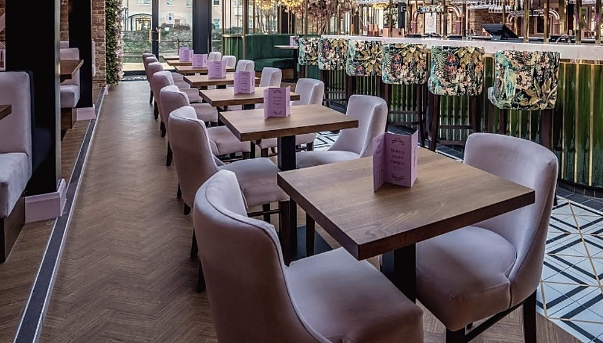

Elin Vaughan
Documentary photography from the west coast of Wales.



Newport, PembrokeshireAvailable for commissions
Tenby, Pembrokeshire. Two minutes up from the harbour steps.
Walk in if you can. Book if you would rather not stand in the rain on Bridge Street.
